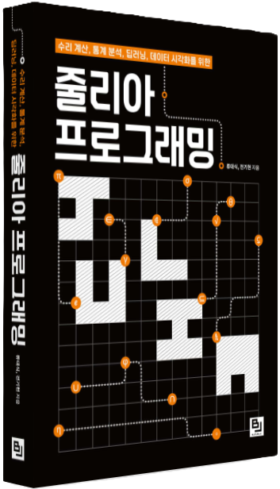

전기현 Curriculum Vitae
last updated: 2025-05-28
| Education & Employment |
Publications |
|
Google Scholar
|
blog: 생새우초밥집
|
📧 rydbr6709@kist.re.kr |
Research Interests
- Tomography
- Computerized Tomography, Conical Radon Transform, Photoacoustic Tomography
- Machine Learning
- (Blind) Inverse Problems, PDE solvers (Physics-Informed Neural Network, DeepONet), Generative Models (for Materials Design)
Education & Employment
- 2025.03. - Present | Postdoctoral Researcher, Computational Science Research Center, Korea Institute of Science and Technology (KIST)
- 2021.03. - 2025.02. | Ph.D. in Mathematics, Kyungpook National University
- Adviser: Prof. Sunghwan Moon
- 2019.03. - 2021.02. | M.S. in Mathematics, Kyungpook National University
- Adviser: Prof. Sunghwan Moon
- 2012.03. - 2019.02. | B.S. in Physics with a Minor in Mathematics, Kyungpook National University
- (Military Service, 2013.04 - 2015.01)
Publications
Journal articles
- Gihyeon Jeon. "Range description for an attenuated conical Radon transform with fixed central axis and opening angle". Applicable Analysis (2025), pp. 1-13.
- Souvik Roy, Gihyeon Jeon, and Sunghwan Moon. “Radon transform with Gaussian beam: Theoretical and numerical reconstruction scheme”. Applied Mathematics and Computation 452 (2023), p. 128024.
- Gihyeon Jeon and Sunghwan Moon. “Singular value decomposition of the attenuated conical Radon transform with a fixed central axis and opening angle”. Integral Transforms and Special Functions 32.10 (2021), pp. 812–822.
Books
- Gihyeon Jeon and Daesick Ryu. 『Julia Programming: Computational Science, Statistical Analysis, Deep Learning, and Data Visualization』 (written in Korean, Korean title: 줄리아 프로그래밍: 수리 계산, 통계 분석, 딥러닝, 데이터 시각화를 위한). bjpublic, 2024. isbn: 9791165922757.

Preprints
- Gyeongha Hwang, Gihyeon Jeon, Sunghwan Moon, and Dabin Park. “Implicit learning to determine variable sound speed and the reconstruction operator in photoacoustic tomography”. arXiv preprint arXiv:2407.09749 (2024).
- Gyeongha Hwang, Gihyeon Jeon, and Sunghwan Moon. “Self-supervised learning for a nonlinear inverse problem with forward operator involving an unknown function arising in photoacoustic tomography”. arXiv preprint arXiv:2301.08693 (2023).
Teaching Experience
Teaching
- 2024 Fall | Calculus II (CLTR0212-021), Kyungpook National University
- 2024 Spring | Calculus I (CLTR0211-040, CLTR0211-021), Kyungpook National University
Teaching Assistant
- 2025 Jan. | Chief Assistant, 2025 Young Mathematician Camp, Korean Mathematical Society and Hyundai Motor Chung Mong-Koo Foundation
- 2022 Fall | Seminar in Linear Algebra 2 (MATH0242-001), Kyungpook National University
- 2022 Spring | Seminar in Linear Algebra 1 (MATH0241-001), Kyungpook National University
- 2019 Spring | Mentorship for Undergraduate Students in Mathematics, Kyungpook National University
Skills
- Computer Languages: Julia-Flux, Python-Pytorch
- Software and Tools: BART (Berkeley Advanced Reconstruction Toolbox), MATLAB, LATEX
- Package Implementation: TopologicalDataAnalysis.jl, Tomography.jl
Awards and Fellowships
- 2024.12. 『Julia Programming』. Selected for the 2024 Sejong Book List Academic Category
- 2024.08. Top Award for Workshop for Young Mathematicians in Korea (WYMK)
- 2022.05. Top Award for Spring Graduate Student Academic Presentation, the Korean Data Information Science Society (KDISS)
- 2021.03. Kyungpook National University Ph.D. Fellowship (Graduate student with excellent research achievements, recommended by project division)
- 2016.09. Encouragement Award for College of Natural Sciences Student Academic Presentation, Kyungpook National University